Direct captures of actual console windows executing Hive and HDFS commands. Click a numbered screenshot to view it at full size. Matching execution logs are retained in the project logs folder.
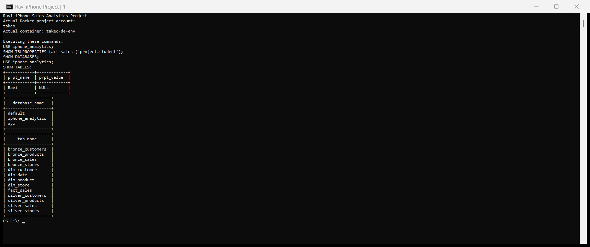
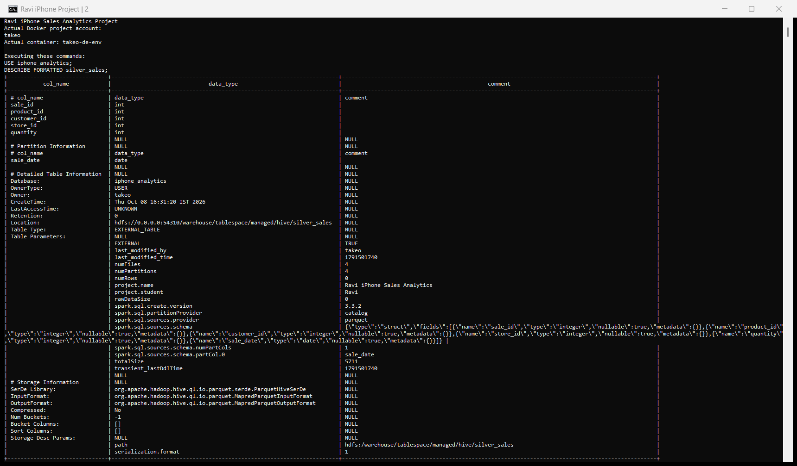
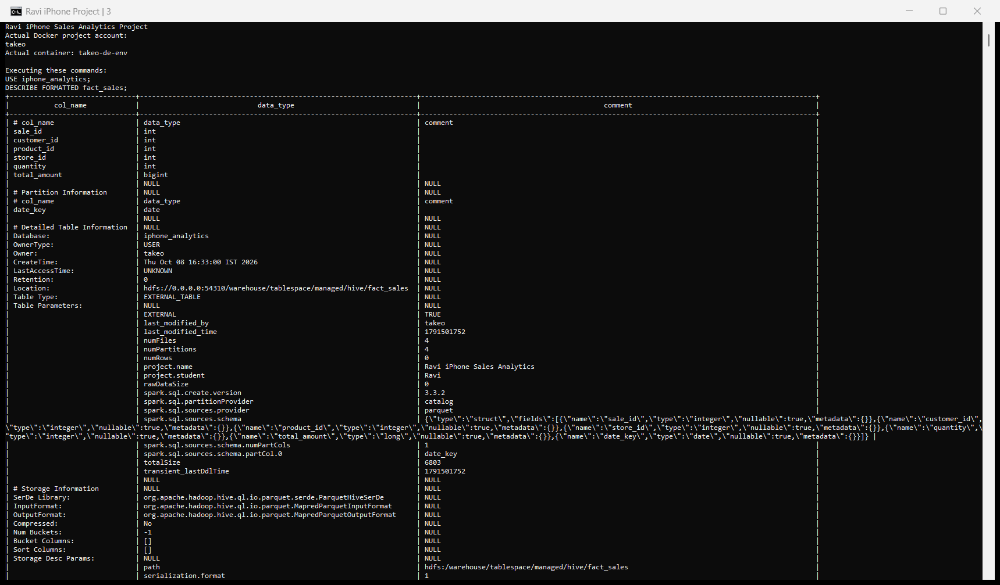
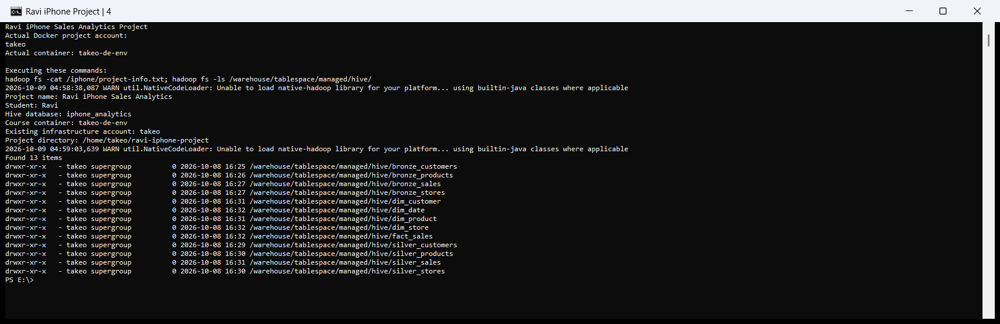
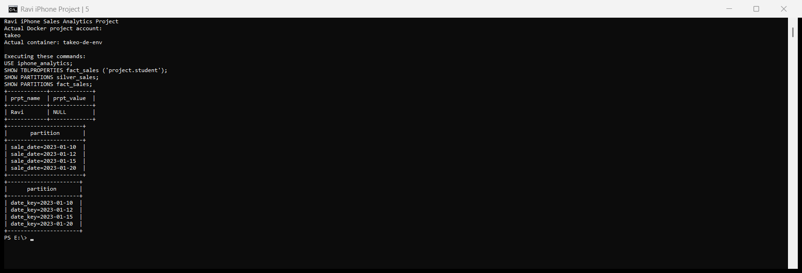
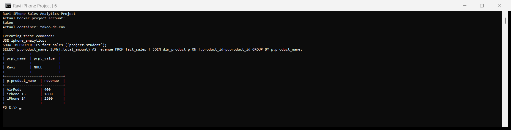
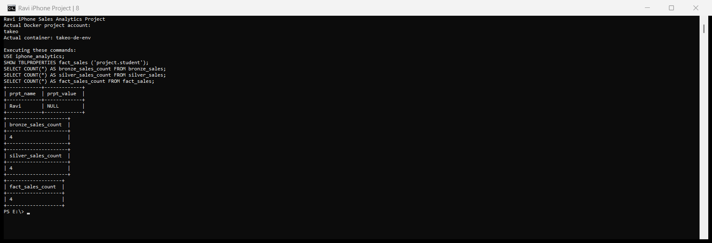
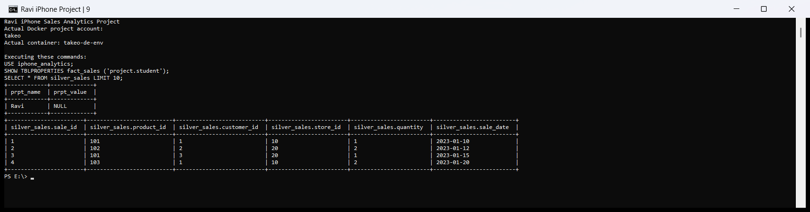
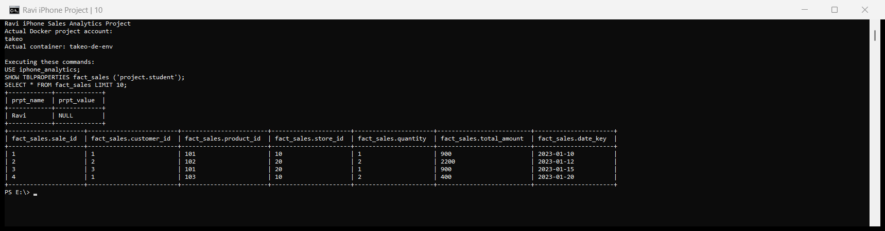
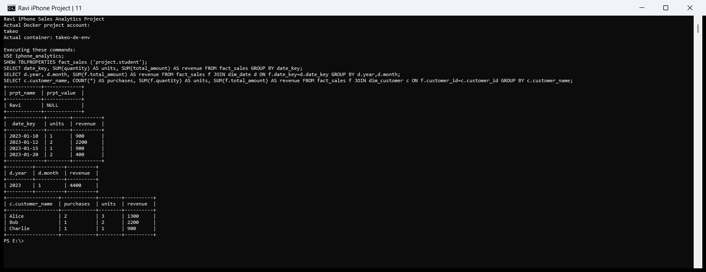
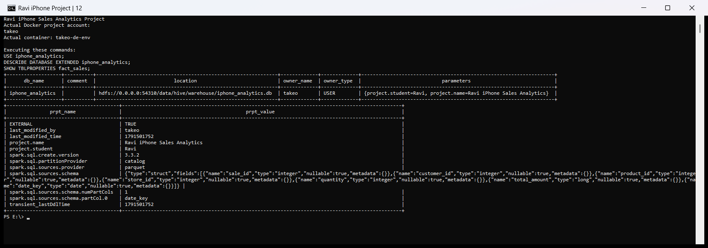